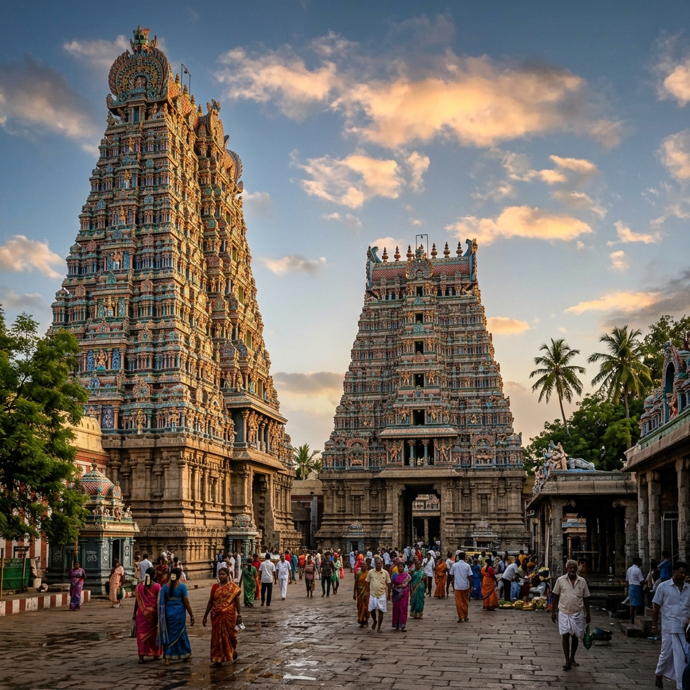

Srirangam Temple
Srirangam, Tamil Nadu
The Sacred Legacy

The Sri Ranganathaswamy Temple at Srirangam is the largest functioning temple complex in the world covering 156 acres with 7 enclosures, 21 Gopurams (towers), and over 50 individual shrines. Situated on a river island formed by the Kaveri and Kollidam rivers in Tamil Nadu, this extraordinary temple has been continuously active for over 2,000 years, making it one of the longest uninterrupted sacred institutions in human history.
The presiding deity is Lord Ranganatha Lord Vishnu in the cosmic reclining posture on the serpent Adishesha housed in the innermost sanctum as a rock-carved image of extraordinary beauty that is among the finest sculptural achievements of ancient India. The temple is the foremost of the 108 Divya Desams (sacred Vishnu abodes) praised in over 1,000 verses by the 12 Alvar saints between the 6th and 9th centuries CE.
The Seven Enclosures
The temple's 7 concentric enclosure walls (Prakarams) span 0 km in total circumference. The outermost enclosures house markets, residences, and administrative buildings essentially a complete ancient town. Each successive inner enclosure is more sacred than the outer. The magnificent Rajagopuram (main gateway tower) stands 73 metres tall, decorated with 1,000 stone figures one of the tallest Gopurams in the world.
Vaikunta Ekadashi
The Vaikunta Ekadashi festival in December-January is the most sacred event when the northern gateway (Vaikunta Dwaram) of the innermost sanctum is opened for the year. Devotees believe passing through this gateway on this day grants liberation from the cycle of birth. Over 1 million pilgrims can gather for this single event, making it one of Tamil Nadu's largest pilgrimages.
Alvar Saints
The 4,000 sacred hymns (Nalayira Divya Prabandham) composed by the 12 Alvar saints, praising Lord Ranganatha and other Vishnu forms, form the devotional foundation of Sri Vaishnavism. Ramanujacharya the great 12th-century philosopher who expounded the Vishishtadvaita philosophy is intimately connected to this temple and his statue stands in a prominent position within the complex.
The Inner Sanctum
The innermost sanctum is so sacred that only properly initiated Sri Vaishnava Brahmin priests may enter. All others receive Darshan from the doorway. The idol of Lord Ranganatha faces south an extremely rare orientation (most Vishnu temples face east) symbolising that the Lord faces toward his devotees who approach from the earthly world. The 600-pillared hall (Ayiram Kaal Mandapam) is covered in breathtaking horse sculpture panels.
The Lord chose to recline on the island formed by sacred rivers, surrounded by devotion. In his reclining form he does not merely rest he eternally holds the universe in his cosmic dream, maintaining all of creation through the power of his divine repose. Nammalvar, Tiruvoimozhi
How to Reach
Tiruchirapalli Airport 0 km
Flights from Chennai, Mumbai, Bangalore
Srirangam Railway Station 0 km
Tiruchirapalli Junction 0 km
From Chennai (0 km), Madurai (0 km)
TNSTC buses from Trichy
November to February
Vaikunta Ekadashi December/January